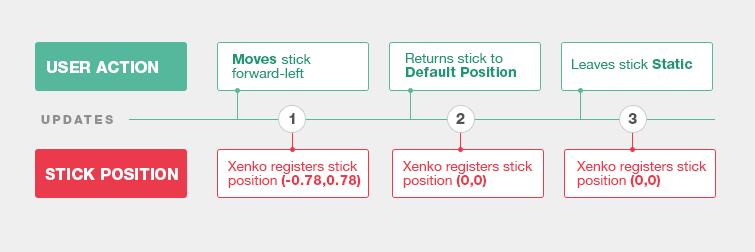
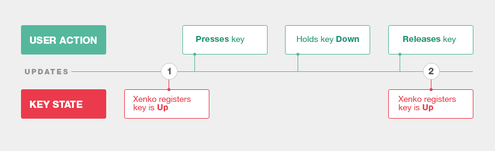
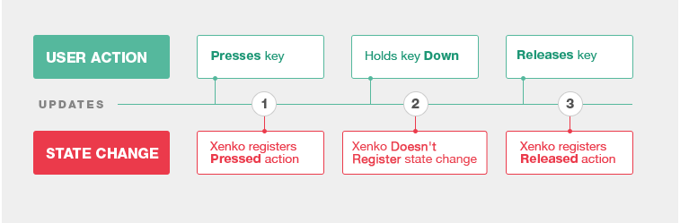
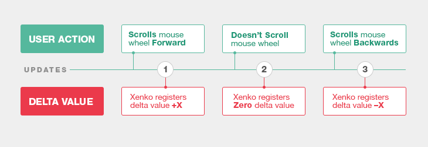
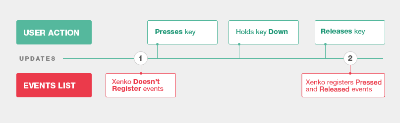

入力
初級 プログラマー
ユーザーは、ゲームパッド、マウス、キーボードなどの入力デバイスを使用して、ゲームやアプリケーションと対話します。すべての対話型アプリケーションは、少なくとも 1 つの入力デバイスをサポートする必要があります。

Stride は、スクリプトを使用して入力を完全に処理します。さまざまな入力の種類を処理するため、低レベルと高レベルの API があります。
低レベルの API はハードウェアに近いので低遅延です。ポインター、キーボード、マウス、ゲームパッド、一部のセンサーからの入力を速く処理できます。
高レベルの API は、ユーザーのために入力を解釈するので、高遅延です。高レベルの API は、ジェスチャと一部のセンサーに使用されます。
入力を処理する
入力は InputManager クラスで処理します。このクラスには、スクリプトからプロパティとメソッドを使用してアクセスできます。
特定の入力デバイスが使用できるかどうかを調べるには、対応する InputManager プロパティを使用します。たとえば、マウスが接続されているかどうかを調べるには、Input.HasMouse を使用します。
デバイスの使用可能性を調べた後、Stride で入力を処理するには 4 つの方法があります。
状態を問い合わせる
デジタル キーやボタンの状態 (アップ_または_ダウン) およびアナログ ボタンやセンサーの数値を問い合わせることができます。たとえば、DownKeys は、最後の更新で_ダウン_状態であったキーのリストを取得します。


更新の間にユーザーが複数のアクションを実行する場合があります。更新の間に状態の変化がなかった場合 (最終結果が同じ)、Stride はアクションを登録しません。

状態の変化を問い合わせる
前回の更新以降のボタンやキーの状態の変化を問い合わせることができます。 この場合は、ボタンやキーのリストを取得するのではなく、個々のボタンとキーごとに問い合わせる必要があります。
デジタル ボタンとキーの場合は、ボタンまたはキーが最後の更新で_押された_、押されている、または_放された_かどうかを問い合わせます。

マウスの位置およびマウス ホイールのスクロールの場合は、前回の更新以降の_デルタ値_を問い合わせます。

2 つの更新の間に、ユーザーが複数のアクションを実行している場合があります。2 つの更新の間に状態の変化がなかった場合 (最終結果が同じ)、Stride はアクションを登録しません。
イベントのリストを問い合わせる
ポインター、ジェスチャ、キーボードの場合は、最後の更新で発生したすべてのイベントを問い合わせることができます。

Note
2 つの更新の間にユーザーが複数のアクションを実行した場合でも、Stride はそのすべてのイベントを登録します。
仮想ボタンを使用する
仮想ボタンを使用して入力を物理キーではなくアクションに関連付けることができ、それによってユーザーが独自のキーを定義できるようにすることができます。詳細については、「仮想ボタン」をご覧ください。